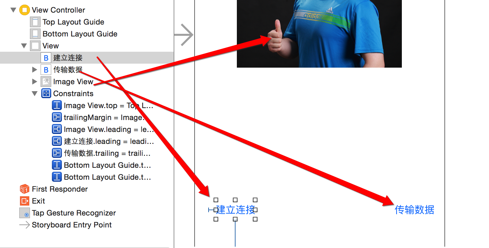

- Markdown语法
- 1. base
- 2. UIView
- 3. jiugongge
- 4. UIScrollView
- 5. UITableView
- 6. autolayout
- 7. map
- 8. notification
- 9. nstimer
- 10. OC
- 11. rac
- 12. review1
- 13. review2
- 14. audio
- 15. twocode
- 16. memory
- 17. bluetooth
- 18. touchid
- 19. UIViewController
- 20. delegate kvo
- 21. dataSave
- 22. pickerView
- 23. quartz2D
- 24. UITextField
- 25. UIDynamic
- 26. coreAnimation
- 27. Cocoapods
- 28. Thread
- 29. network
- Published using GitBook
iOS中的蓝牙
概述
iOS中提供了4个框架用于实现蓝牙连接
1.GameKit.framework(用法简单)
只能用于iOS设备之间的同个应用内连接,多用于游戏(eg.拳皇,棋牌类),从iOS7开始过期
2.MultipeerConnectivity.framework(代替1)
只能用于iOS设备之间的连接,从iOS7开始引入,主要用于非联网状态下,通过wifi或者蓝牙进行文件共享(仅限于沙盒的文件),多用于附近无网聊天
3.ExternalAccessory.framework(MFi)
可用于第三方蓝牙设备交互,但是蓝牙设备必须经过苹果MFi认证(国内很少)
4.CoreBluetooth.framework（时下热门)
可用于第三方蓝牙设备交互,必须要支持蓝牙4.0- 硬件至少是4s,系统至少是iOS6
- 蓝牙4.0以低功耗著称,一般也叫BLE（Bluetooth Low Energy）
- 目前应用比较多的案例:运动手环,嵌入式设备,智能家居
设计到的系统/框架
- HealthKit/物联网HomeKit/wathOS1,2/iBeacon
GameKit用法
一.准备工作
1.搭建UI 
2.拖线
// 图片
@property (weak, nonatomic) IBOutlet UIImageView *imageView;
// 建立连接
- (IBAction)buildConnect:(id)sender{}
// 发送数据
- (IBAction)sendData:(id)sender{}
二.连接蓝牙
- 显示可以连接的蓝牙设备列表
- (IBAction)buildConnect:(id)sender {
// 创建弹窗
GKPeerPickerController *ppc = [[GKPeerPickerController alloc] init];
// 设置代理 @interface ViewController () <GKPeerPickerControllerDelegate>
ppc.delegate = self;
// 展示
[ppc show];
}
- 监听蓝牙的连接
#pragma mark -GKPeerPickerControllerDelegate
// 连接成功就会调用
- (void)peerPickerController:(GKPeerPickerController *)picker // 弹窗
didConnectPeer:(NSString *)peerID // 连接到的蓝牙设备号
toSession:(GKSession *)session // 连接会话(通过它进行数据交互)
{
NSLog(@"%s, line = %d", __FUNCTION__, __LINE__);
// 弹窗消失
[picker dismiss];
}
三.利用蓝牙传输数据
- 点击图片从相册中选择一张显示本机
- 可以修改imaV为Btn,也可以为imaV添加手势
- 1.修改imageView的用户交互

- 2.添加手势到图片上

- 3.拖出手势的响应事件

- 4.完善相册选择图片代码
- 1.修改imageView的用户交互
- 可以修改imaV为Btn,也可以为imaV添加手势
// 手势-点击从相册中选一张照片
- (IBAction)tapImage:(UITapGestureRecognizer *)sender {
NSLog(@"%s, line = %d", __FUNCTION__, __LINE__);
// 先判断是否有相册
if (![UIImagePickerController isSourceTypeAvailable:UIImagePickerControllerSourceTypePhotoLibrary]) {
return;
}
// 创建弹出的控制器
UIImagePickerController *ipc = [[UIImagePickerController alloc] init];
// 设置图片来源为相册
ipc.sourceType = UIImagePickerControllerSourceTypePhotoLibrary;
// 设置代理 @interface ViewController () <UINavigationControllerDelegate, UIImagePickerControllerDelegate>
ipc.delegate = self;
// modal出来
[self presentViewController:ipc animated:YES completion:nil];
}
#pragma mark - UINavigationControllerDelegate, UIImagePickerControllerDelegate
// 选中某图片后调用
- (void)imagePickerController:(UIImagePickerController *)picker didFinishPickingMediaWithInfo:(NSDictionary<NSString *,id> *)info
{
// 控制器返回
[picker dismissViewControllerAnimated:YES completion:nil];
// 设置图片
self.imageView.image = info[UIImagePickerControllerOriginalImage];
}
- 点击发送数据完成图片显示到另一个蓝牙机器上
- 1.分析需要通过GKSession对象来传递数据,所以在
peerPickerController:didConnectPeer:didConnectPeer:的方法中保存session会话
- 1.分析需要通过GKSession对象来传递数据,所以在
@property (nonatomic, strong) GKSession *session; /**< 蓝牙连接会话 */
// 连接成功就会调用
- (void)peerPickerController:(GKPeerPickerController *)picker // 弹窗
didConnectPeer:(NSString *)peerID // 连接到的蓝牙设备号
toSession:(GKSession *)session // 连接会话(通过它进行数据交互)
{
NSLog(@"%s, line = %d", __FUNCTION__, __LINE__);
// 弹窗消失
[picker dismiss];
// 保存会话
self.session = session;
}
- 发送
// 发送数据
- (IBAction)sendData:(id)sender {
if (self.imageView.image == nil) return; // 有图片才继续执行
// 通过蓝牙链接会话发送数据到所有设备
[self.session sendDataToAllPeers:UIImagePNGRepresentation(self.imageView.image) // 数据
withDataMode:GKSendDataReliable // 枚举:发完为止
error:nil];
}
- 接收
// 连接成功就会调用
- (void)peerPickerController:(GKPeerPickerController *)picker // 弹窗
didConnectPeer:(NSString *)peerID // 连接到的蓝牙设备号
toSession:(GKSession *)session // 连接会话(通过它进行数据交互)
{
NSLog(@"%s, line = %d", __FUNCTION__, __LINE__);
// 弹窗消失
[picker dismiss];
// 保存会话
self.session = session;
// 处理接收到的数据[蓝牙设备接收到数据时,就会调用 [self receiveData:fromPeer:inSession:context:]]
// 设置数据接受者为:self
[self.session setDataReceiveHandler:self
withContext:nil];
}
#pragma mark - 蓝牙设备接收到数据时,就会调用
- (void)receiveData:(NSData *)data // 数据
fromPeer:(NSString *)peer // 来自哪个设备
inSession:(GKSession *)session // 连接会话
context:(void *)context
{
NSLog(@"%s, line = %d", __FUNCTION__, __LINE__);
// 显示
self.imageView.image = [UIImage imageWithData:data];
// 写入相册
UIImageWriteToSavedPhotosAlbum(self.imageView.image, nil, nil, nil);
}
四.注意
- 只能用于iOS设备之间的链接
- 只能用于同一个应用程序之间的连接
- 最好别利用蓝牙发送比较大的数据
MultipeerConnectivity
在iOS7中，引入了一个全新的框架——Multipeer Connectivity（多点连接）。
利用Multipeer Connectivity框架，即使在
没有连接到WiFi（WLAN）或移动网络（xG）的情况下，距离较近的Apple设备（iMac/iPad/iPhone）之间可基于蓝牙和WiFi（P2P WiFi）技术进行发现和连接实现近场通信。Multipeer Connectivity扩充的功能与利用AirDrop传输文件非常类似，可以将其看作AirDrop不能直接使用的补偿，代价是需要自己实现。
手机不联网也能跟附近的人聊得火热的
FireChat和See You Around等近场聊天App、近距离无网遥控交互拍照神器拍咯App就是基于Multipeer Connectivity框架实现。相比AirDrop，Multipeer Connectivity在进行发现和会话时并不要求同时打开WiFi和蓝牙，也不像AirDrop那样强制打开这两个开关，而是根据条件适时选择使用蓝牙或（和）WiFi。
粗略测试情况如下：
- 双方WiFi和蓝牙
都未打开：无法发现。 - 双方都开启
蓝牙：通过蓝牙发现和传输。 双方都开启
WiFi：通过WiFi Direct发现和传输，速度接近AirDrop（Reliable速率稍低），不知道同一WLAN下是否优先走局域网？双方都
同时开启了WiFi和蓝牙：应该是模拟AirDrop，通过低功耗蓝牙技术扫描发现握手，然后通过WiFi Direct传输。
- 双方WiFi和蓝牙
常用类
- MCPeerID
类似sockaddr，用于标识连接的两端endpoint，通常是昵称或设备名称。
该对象只开放了displayName属性，私有MCPeerIDInternal对象持有的设备相关的_idString/_pid64字段并未公开。
在许多情况下，客户端同时广播并发现同一个服务，这将导致一些混乱，尤其是在client/server模式中。所以，每一个服务都应有一个类型标示符——serviceType，它是由ASCII字母、数字和“-”组成的短文本串，最多15个字符。
- MCNearbyServiceAdvertiser
类似broadcaster,可以接收，并处理用户请求连接的响应。但是，这个类会有回调，告知有用户要与您的设备连接，然后可以自定义提示框，以及自定义连接处理。
主线程（com.apple.main-thread(serial)）创建MCNearbyServiceAdvertiser并启动startAdvertisingPeer。 MCNearbyServiceAdvertiserDelegate异步回调（didReceiveInvitationFromPeer）切换回主线程。 在主线程didReceiveInvitationFromPeer中创建MCSession并invitationHandler(YES, session)接受会话连接请求（accept参数为YES）。
- MCNearbyServiceBrowser
类似servo listen+client connect,用于搜索附近的用户，并可以对搜索到的用户发出邀请加入某个会话中。
主线程（com.apple.main-thread(serial)）创建MCNearbyServiceBrowser并启动startBrowsingForPeers。
MCNearbyServiceBrowserDelegate异步回调（foundPeer/lostPeer）切换回主线程。
主线程创建MCSession并启动invitePeer。
- MCSession
启用和管理Multipeer连接会话中的所有人之间的沟通。 通过Sesion，给别人发送数据
注意，peerID并不具备设备识别属性。
类似TCP链接中的socket。创建MCSession时，需指定自身MCPeerID，类似bind。
为避免频繁的会话数据通知阻塞主线程，MCSessionDelegate异步回调（didChangeState/didReceiveCertificate/didReceiveData/didReceiveStream）有一个专门的回调线程——com.apple.MCSession.callbackQueue(serial)。为避免阻塞MCSeesion回调线程，最好新建数据读（写）线程！
- MCAdvertiserAssistant/MCBrowserViewController
MCAdvertiserAssistant //可以接收，并处理用户请求连接的响应。没有回调，会弹出默认的提示框，并处理连接。
MCBrowserViewController 弹出搜索框,需要手动modal
MCAdvertiserAssistant为针对Advertiser封装的管理助手；MCBrowserViewController继承自UIViewController，提供了基本的UI应用框架。 MCBrowser/MCAdvertiser的回调线程一般是delegate所在线程Queue：com.apple.main-thread(serial)。
ExteralAccessory
- MFI:(make for iPhone/iPad/iTouch)专门为苹果设备制作的设备
- 支持MFI的设备开发使用此框架
baseK(相关基础知识)
蓝牙常见名称和缩写
- BLE:(Bluetooth low energy)蓝牙4.0设备因为低耗电,也叫BLE
- peripheral,central:外设和中心设备,发起链接的是central(一般是指手机),被链接的设备是peripheral(运动手环)
- service and characteristic:(服务和特征)每个设备会提供服务和特征,类似于服务端的API,但是结构不同.
每个设备会有很多服务,每个服务中包含很多字段,这些字段的权限一般分为读(read),写(write),通知(notify)几种,就是我们连接设备后具体需要操作的内容 - Description:每个characteristic可以对应一个或者多个Description用于描述characteristic的信息或属性(eg.范围,计量单位)
蓝牙基础知识
CoreBluetooth框架的核心其实是俩东西:peripheral和central,对应他们分别有一组相关的API和类
这两组api粉笔对应不同的业务常见:左侧叫中心模式,就是以你的app作为中心,连接其他的外设的场景;而右侧称为外设模式,使用
手机作为外设连接其他中心设备操作的场景服务和特征(service and characteristic)
- 每个设备都会有1个or多个服务
- 每个服务里都会有1个or多个特征
- 特征就是具体键值对,提供数据的地方
- 每个特征属性分为:读,写,通知等等
typedef NS_OPTIONS(NSUInteger, CBCharacteristicProperties) {
CBCharacteristicPropertyBroadcast = 0x01,
CBCharacteristicPropertyRead = 0x02,
CBCharacteristicPropertyWriteWithoutResponse = 0x04,
CBCharacteristicPropertyWrite = 0x08,
CBCharacteristicPropertyNotify = 0x10,
CBCharacteristicPropertyIndicate = 0x20,
CBCharacteristicPropertyAuthenticatedSignedWrites = 0x40,
CBCharacteristicPropertyExtendedProperties = 0x80,
CBCharacteristicPropertyNotifyEncryptionRequired NS_ENUM_AVAILABLE(NA, 6_0) = 0x100,
CBCharacteristicPropertyIndicateEncryptionRequired NS_ENUM_AVAILABLE(NA, 6_0) = 0x200
};
- 外设,服务,特征的关系
BLE中心模式流程
- 1.建立中心角色
- 2.扫描外设(Discover Peripheral)
- 3.连接外设(Connect Peripheral)
- 4.扫描外设中的服务和特征(Discover Services And Characteristics)
- 4.1 获取外设的services
- 4.2 获取外设的Characteristics,获取characteristics的值,,获取Characteristics的Descriptor和Descriptor的值
- 5.利用特征与外设做数据交互(Explore And Interact)
- 6.订阅Characteristic的通知
- 7.断开连接(Disconnect)
BLE外设模式流程
- 1.启动一个Peripheral管理对象
- 2.本地peripheral设置服务,特征,描述,权限等等
- 3.peripheral发送广告
- 4.设置处理订阅,取消订阅,读characteristic,写characteristic的代理方法
蓝牙设备的状态
- 1.待机状态(standby):设备没有传输和发送数据,并且没有连接到任何外设
- 2.广播状态(Advertiser):周期性广播状态
- 3.扫描状态(Scanner):主动搜索正在广播的设备
- 4.发起链接状态(Initiator):主动向扫描设备发起连接
- 5.主设备(Master):作为主设备连接到其它设备.
- 6.从设备(Slave):作为从设备链接到其它设备
蓝牙设备的五种工作状态
- 准备(Standby)
- 广播(Advertising)
- 监听扫描(Scanning)
- 发起连接(Initiating)
- 已连接(Connected)
蓝牙和版本使用限制
- 蓝牙2.0:越狱设备
- BLE:iOS6以上
- MFI认证设备:无限制
BLE测试
- 两台BLE设备
- 如何让iOS模拟器也能测试BLE?
- 买一个CSR蓝牙4.0 USB适配器,插在Mac上
- 在终端输入sudo nvram bluetoothHostControllerSwitchBehavior="never"
- 重启Mac
- 用Xcode4.6调试代码,将程序跑在iOS6.1模拟器上
- 苹果把iOS7.0模拟器对BLE的支持移除了
BLE中心模式流程-coding
BLE中心模式流程
- 1.建立中心角色
- 2.扫描外设(Discover Peripheral)
- 3.连接外设(Connect Peripheral)
- 4.扫描外设中的服务和特征(Discover Services And Characteristics)
- 4.1 获取外设的services
- 4.2 获取外设的Characteristics,获取characteristics的值,,获取Characteristics的Descriptor和Descriptor的值
- 5.利用特征与外设做数据交互(Explore And Interact)
- 6.订阅Characteristic的通知
- 7.断开连接(Disconnect)
准备环境
- 1.Xcode7.0
- 2.手机
- 3.外设(手机+LightBlue)
实现步骤
1.导入CB头文件,建立主设备管理类,设置主设备代理
#import <CoreBluetooth/CoreBluetooth.h>
@interface XMGBLEController () <CBCentralManagerDelegate>
@property (nonatomic, strong) CBCentralManager *cMgr; /**< 中心管理设备 */
@end
@implementation XMGBLEController
#pragma mark - 懒加载
// 1.建立中心管理者
- (CBCentralManager *)cMgr
{
if (!_cMgr) {
NSLog(@"%s, line = %d", __FUNCTION__, __LINE__);
/*
设置主设备的代理,CBCentralManagerDelegate
必须实现的：
- (void)centralManagerDidUpdateState:(CBCentralManager *)central;//主设备状态改变调用，在初始化CBCentralManager的适合会打开设备，只有当设备正确打开后才能使用
其他选择实现的委托中比较重要的：
- (void)centralManager:(CBCentralManager *)central didDiscoverPeripheral:(CBPeripheral *)peripheral advertisementData:(NSDictionary *)advertisementData RSSI:(NSNumber *)RSSI; //找到外设
- (void)centralManager:(CBCentralManager *)central didConnectPeripheral:(CBPeripheral *)peripheral;//连接外设成功
- (void)centralManager:(CBCentralManager *)central didFailToConnectPeripheral:(CBPeripheral *)peripheral error:(NSError *)error;//外设连接失败
- (void)centralManager:(CBCentralManager *)central didDisconnectPeripheral:(CBPeripheral *)peripheral error:(NSError *)error;//断开外设
*/
_cMgr = [[CBCentralManager alloc] initWithDelegate:self queue:dispatch_get_main_queue()]; // 线程不传默认是主线程
}
return _cMgr;
}
- (void)viewDidLoad {
[super viewDidLoad];
self.title = @"BLE";
self.view.backgroundColor = [UIColor orangeColor];
// 初始化
[self cMgr];
// 不能在此处扫描,因为状态还没变为打开
//[self.cMgr scanForPeripheralsWithServices:nil options:nil];
}
2.扫描外设
- 扫描的方法防治cMgr成功打开的代理方法中
- 只有设备成功打开,才能开始扫描,否则会报错
#pragma mark - CBCentralManagerDelegate
// 中心管理者状态改变, 在初始化CBCentralManager的时候会打开设备，只有当设备正确打开后才能使用
- (void)centralManagerDidUpdateState:(CBCentralManager *)central
{
NSLog(@"%s, line = %d", __FUNCTION__, __LINE__);
switch (central.state) {
case CBCentralManagerStateUnknown:
NSLog(@">>>CBCentralManagerStateUnknown");
break;
case CBCentralManagerStateResetting:
NSLog(@">>>CBCentralManagerStateResetting");
break;
case CBCentralManagerStateUnsupported:
NSLog(@">>>CBCentralManagerStateUnsupported");
break;
case CBCentralManagerStateUnauthorized:
NSLog(@">>>CBCentralManagerStateUnauthorized");
break;
case CBCentralManagerStatePoweredOff:
NSLog(@">>>CBCentralManagerStatePoweredOff");
break;
case CBCentralManagerStatePoweredOn:
NSLog(@">>>CBCentralManagerStatePoweredOn");
// 2.开始扫描周围的外设
/*
第一个参数nil就是扫描周围所有的外设，扫描到外设后会进入
- (void)centralManager:(CBCentralManager *)central didDiscoverPeripheral:(CBPeripheral *)peripheral advertisementData:(NSDictionary *)advertisementData RSSI:(NSNumber *)RSSI;
*/
[self.cMgr scanForPeripheralsWithServices:nil options:nil];
break;
default:
break;
}
}
// 扫描到设备会进入到此代理方法
- (void)centralManager:(CBCentralManager *)central didDiscoverPeripheral:(CBPeripheral *)peripheral advertisementData:(NSDictionary<NSString *,id> *)advertisementData RSSI:(NSNumber *)RSSI
{
NSLog(@"%s, line = %d, per = %@, data = %@, rssi = %@", __FUNCTION__, __LINE__, peripheral, advertisementData, RSSI);
// 接下来连接设备
}
3.连接外设
- 扫描手环,打印结果

- 根据打印结果
// 扫描到设备会进入到此代理方法
- (void)centralManager:(CBCentralManager *)central didDiscoverPeripheral:(CBPeripheral *)peripheral advertisementData:(NSDictionary<NSString *,id> *)advertisementData RSSI:(NSNumber *)RSSI
{
NSLog(@"%s, line = %d, per = %@, data = %@, rssi = %@", __FUNCTION__, __LINE__, peripheral, advertisementData, RSSI);
// 3.接下来可以连接设备
//如果你没有设备，可以下载一个app叫lightbule的app去模拟一个设备
//这里自己去设置下连接规则，我设置的是二维码扫描到的运动手环的设备号
// 判断设备号是否扫描到
if ([peripheral.name isEqualToString:@"OBand-75"]) {
/*
一个主设备最多能连7个外设，每个外设最多只能给一个主设备连接,连接成功，失败，断开会进入各自的委托
- (void)centralManager:(CBCentralManager *)central didConnectPeripheral:(CBPeripheral *)peripheral;//连接外设成功的委托
- (void)centralManager:(CBCentralManager *)central didFailToConnectPeripheral:(CBPeripheral *)peripheral error:(NSError *)error;//外设连接失败的委托
- (void)centralManager:(CBCentralManager *)central didDisconnectPeripheral:(CBPeripheral *)peripheral error:(NSError *)error;//断开外设的委托
*/
// 保存外设,否则方法结束就销毁
self.per = peripheral;
[self.cMgr connectPeripheral:self.per options:nil];
}else
{
// 此处Alert提示未扫描到设备,重新扫描
#warning noCode
NSLog(@"没扫描到 >>>>>>>> %s, line = %d", __FUNCTION__, __LINE__);
}
}
// 外设连接成功
- (void)centralManager:(CBCentralManager *)central didConnectPeripheral:(CBPeripheral *)peripheral
{
NSLog(@"%s, line = %d", __FUNCTION__, __LINE__);
NSLog(@">>>连接到名称为（%@）的设备-成功",peripheral.name);
}
// 外设连接失败
- (void)centralManager:(CBCentralManager *)central didFailToConnectPeripheral:(CBPeripheral *)peripheral error:(NSError *)error
{
NSLog(@"%s, line = %d", __FUNCTION__, __LINE__);
}
// 断开连接(丢失连接)
- (void)centralManager:(CBCentralManager *)central didDisconnectPeripheral:(CBPeripheral *)peripheral error:(NSError *)error
{
NSLog(@"%s, line = %d", __FUNCTION__, __LINE__);
}
4.扫描外设中的服务和特征
设备链接成功后,就可以扫描设备的服务(services)了,同样是通过代理,扫描到结果后会触发某代理方法.
注意:此时CBCentralManagerDelegate已经不能满足需求,需要新的CBPeripheralDelegate来搞定.
该协议中包含了central与peripheral的许多回调方法
(eg.:获取services,获取characteristics,获取characteristics的值,获取characteristics的Descriptor以及Descriptor的值,写数据,读RSSI,用通知的方式订阅数据等等).
- 4.1 获取外设的services
- 首先设置外设的代理,并搜寻services
- 然后在代理方法
peripheral:didDiscoverServices:中遍历services
// 外设连接成功
- (void)centralManager:(CBCentralManager *)central didConnectPeripheral:(CBPeripheral *)peripheral
{
NSLog(@"%s, line = %d", __FUNCTION__, __LINE__);
NSLog(@">>>连接到名称为（%@）的设备-成功",peripheral.name);
//设置的peripheral代理CBPeripheralDelegate
//@interface ViewController : UIViewController<CBCentralManagerDelegate,CBPeripheralDelegate>
[peripheral setDelegate:self];
//扫描外设Services，成功后会进入方法：-(void)peripheral:(CBPeripheral *)peripheral didDiscoverServices:(NSError *)error{
[peripheral discoverServices:nil];
/*
Discovers the specified services of the peripheral.
An array of CBUUID objects that you are interested in. Here, each CBUUID object represents a UUID that identifies the type of service you want to discover.
*/
}
#pragma mark - CBPeripheralDelegate
// 发现外设的service
- (void)peripheral:(CBPeripheral *)peripheral didDiscoverServices:(NSError *)error
{
if (error)
{
NSLog(@">>>Discovered services for %@ with error: %@", peripheral.name, [error localizedDescription]);
return;
}
for (CBService *service in peripheral.services) {
NSLog(@"service.UUID = %@", service.UUID);
//扫描每个service的Characteristics，扫描到后会进入方法： -(void)peripheral:(CBPeripheral *)peripheral didDiscoverCharacteristicsForService:(CBService *)service error:(NSError *)error
[peripheral discoverCharacteristics:nil forService:service];
}
}
- 4.2 获取外设的characteris,获取Characteristics的值,获取Characteristics的Descriptor以及Descriptor的值
// 外设发现service的特征
- (void)peripheral:(CBPeripheral *)peripheral didDiscoverCharacteristicsForService:(CBService *)service error:(NSError *)error
{
if (error)
{
NSLog(@"error Discovered characteristics for %@ with error: %@", service.UUID, [error localizedDescription]);
return;
}
for (CBCharacteristic *characteristic in service.characteristics)
{
NSLog(@"service:%@ 的 Characteristic: %@",service.UUID,characteristic.UUID);
}
#warning noCodeFor 优化,分开写是为了让大家看注释清晰,并不符合编码规范
//获取Characteristic的值，读到数据会进入方法：-(void)peripheral:(CBPeripheral *)peripheral didUpdateValueForCharacteristic:(CBCharacteristic *)characteristic error:(NSError *)error
for (CBCharacteristic *characteristic in service.characteristics){
[peripheral readValueForCharacteristic:characteristic]; // 外设读取特征的值
}
//搜索Characteristic的Descriptors，读到数据会进入方法：-(void)peripheral:(CBPeripheral *)peripheral didDiscoverDescriptorsForCharacteristic:(CBCharacteristic *)characteristic error:(NSError *)error
for (CBCharacteristic *characteristic in service.characteristics){
[peripheral discoverDescriptorsForCharacteristic:characteristic]; // 外设发现特征的描述
}
}
// 获取characteristic的值
- (void)peripheral:(CBPeripheral *)peripheral didUpdateValueForCharacteristic:(nonnull CBCharacteristic *)characteristic error:(nullable NSError *)error
{
//打印出characteristic的UUID和值
//!注意，value的类型是NSData，具体开发时，会根据外设协议制定的方式去解析数据
NSLog(@"%s, line = %d, characteristic.UUID:%@ value:%@", __FUNCTION__, __LINE__, characteristic.UUID, characteristic.value);
}
// 获取Characteristics的 descriptor的值
- (void)peripheral:(CBPeripheral *)peripheral didUpdateValueForDescriptor:(nonnull CBDescriptor *)descriptor error:(nullable NSError *)error
{
//打印出DescriptorsUUID 和value
//这个descriptor都是对于characteristic的描述，一般都是字符串，所以这里我们转换成字符串去解析
NSLog(@"%s, line = %d, descriptor.UUID:%@ value:%@", __FUNCTION__, __LINE__, descriptor.UUID, descriptor.value);
}
// 发现特征Characteristics的描述Descriptor
- (void)peripheral:(CBPeripheral *)peripheral didDiscoverDescriptorsForCharacteristic:(nonnull CBCharacteristic *)characteristic error:(nullable NSError *)error
{
NSLog(@"%s, line = %d", __FUNCTION__, __LINE__);
for (CBDescriptor *descriptor in characteristic.descriptors) {
NSLog(@"descriptor.UUID:%@",descriptor.UUID);
}
}
5.写数据到特征中
// 5.将数据写入特征(自定义方法,为了看的更清楚,没别的意思)
- (void)yf_peripheral:(CBPeripheral *)peripheral writeData:(NSData *)data forCharacteristic:(CBCharacteristic *)characteristic
{
/*
typedef NS_OPTIONS(NSUInteger, CBCharacteristicProperties) {
CBCharacteristicPropertyBroadcast = 0x01,
CBCharacteristicPropertyRead = 0x02,
CBCharacteristicPropertyWriteWithoutResponse = 0x04,
CBCharacteristicPropertyWrite = 0x08,
CBCharacteristicPropertyNotify = 0x10,
CBCharacteristicPropertyIndicate = 0x20,
CBCharacteristicPropertyAuthenticatedSignedWrites = 0x40,
CBCharacteristicPropertyExtendedProperties = 0x80,
CBCharacteristicPropertyNotifyEncryptionRequired NS_ENUM_AVAILABLE(NA, 6_0) = 0x100,
CBCharacteristicPropertyIndicateEncryptionRequired NS_ENUM_AVAILABLE(NA, 6_0) = 0x200
};
打印出特征的权限(characteristic.properties),可以看到有很多种,这是一个NS_OPTIONS的枚举,可以是多个值
常见的又read,write,noitfy,indicate.知道这几个基本够用了,前俩是读写权限,后俩都是通知,俩不同的通知方式
*/
NSLog(@"%s, line = %d, characteristic.properties:%d", __FUNCTION__, __LINE__, characteristic.properties);
// 只有特征的properties中有写的属性时候,才写
if (characteristic.properties & CBCharacteristicPropertyWrite) {
// 这句才是正宗的核心代码
[peripheral writeValue:data forCharacteristic:characteristic type:CBCharacteristicWriteWithResponse];
}
}
6.订阅特征的通知
// 设置通知
- (void)yf_peripheral:(CBPeripheral *)peripheral setNotifyForCharacteristic:(CBCharacteristic *)characteristic
{
// 设置通知, 数据会进入 peripheral:didUpdateValueForCharacteristic:error:方法
[peripheral setNotifyValue:YES forCharacteristic:characteristic];
}
// 取消通知
- (void)yf_peripheral:(CBPeripheral *)peripheral cancelNotifyForCharacteristic:(CBCharacteristic *)characteristic
{
[peripheral setNotifyValue:NO forCharacteristic:characteristic];
}
7.断开连接
// 7.断开连接
- (void)yf_cMgr:(CBCentralManager *)cMgr stopScanAndDisConnectWithPeripheral:(CBPeripheral *)peripheral
{
// 停止扫描
[cMgr stopScan];
// 断开连接
[cMgr cancelPeripheralConnection:peripheral];
}
BLE-periphral外设模式流程
之前在基础知识介绍过BLE应用的两种流程,如图:
- central模式用的都是左边的类，而peripheral模式用的是右边的类
peripheral模式的流程
- 1.引入CoreBluetooth框架,初始化peripheralManager
- 2.设置peripheralManager中的内容
- 3.开启广播advertising
- 4.对central的操作进行响应
- 4.1 读characteristics请求
- 4.2 写characteristics请求
- 4.4 订阅和取消订阅characteristics
准备环境
- Xcode
- 真机(4s以上)
具体操作步骤
1.引入CoreBluetooth框架,初始化peripheralManager
#import <CoreBluetooth/CoreBluetooth.h>
@interface XMGBLEPeripheralViewController () <CBPeripheralManagerDelegate>
@property (nonatomic, strong) CBPeripheralManager *pMgr; /**< 外设管理者 */
@end
@implementation XMGBLEPeripheralViewController
// 懒加载
- (CBPeripheralManager *)pMgr
{
if (!_pMgr) {
_pMgr = [[CBPeripheralManager alloc] initWithDelegate:self queue:dispatch_get_main_queue()];
}
return _pMgr;
}
- (void)viewDidLoad {
[super viewDidLoad];
// 调用get方法初始化,初始化后CBPeripheralManager状态改变会调用代理方法peripheralManagerDidUpdateState:
// 模拟器永远也不会是CBPeripheralManagerStatePoweredOn状态
[self pMgr];
}
2.设置peripheralManager中的内容
- 创建characteristics及其description,
- 创建service,把characteristics添加到service中,
- 再把service添加到peripheralManager中
#pragma mark - CBPeripheralManagerDelegate
// CBPeripheralManager初始化后会触发的方法
- (void)peripheralManagerDidUpdateState:(CBPeripheralManager *)peripheral
{
if (peripheral.state == CBPeripheralManagerStatePoweredOn) {
// 提示设备成功打开
[SVProgressHUD showSuccessWithStatus:@"xmg设备打开成功~"];
// 配置各种服务入CBPeripheralManager
[self yf_setupPMgr];
}else
{
// 提示设备打开失败
[SVProgressHUD showErrorWithStatus:@"失败!"];
}
}
#pragma mark - 私有方法
- (void)yf_setupPMgr
{
// 特征描述的UUID
CBUUID *characteristicUserDescriptionUUID = [CBUUID UUIDWithString:CBUUIDCharacteristicUserDescriptionString];
// 特征的通知UUID
CBUUID *notifyCharacteristicUUID = [CBUUID UUIDWithString:notiyCharacteristicStrUUID];
// 特征的读写UUID
CBUUID *readwriteCharacteristicUUID = [CBUUID UUIDWithString:readwriteCharacteristicStrUUID];
// 特征的只读UUID
CBUUID *readCharacteristicUUID = [CBUUID UUIDWithString:readwriteCharacteristicStrUUID];
CBUUID *ser1UUID = [CBUUID UUIDWithString:Service1StrUUID];
CBUUID *ser2UUID = [CBUUID UUIDWithString:Service2StrUUID];
// 初始化一个特征的描述
CBMutableDescriptor *des1 = [[CBMutableDescriptor alloc] initWithType:characteristicUserDescriptionUUID value:@"xmgDes1"];
// 可通知的特征
CBMutableCharacteristic *notifyCharacteristic = [[CBMutableCharacteristic alloc] initWithType:notifyCharacteristicUUID // UUID
properties:CBCharacteristicPropertyNotify // 枚举:通知
value:nil // 数据先不传
permissions:CBAttributePermissionsReadable]; // 枚举:可读
// 可读写的特征
CBMutableCharacteristic *readwriteChar = [[CBMutableCharacteristic alloc] initWithType:readwriteCharacteristicUUID
properties:CBCharacteristicPropertyRead | CBCharacteristicPropertyWrite
value:nil
permissions:CBAttributePermissionsReadable | CBAttributePermissionsWriteable];
[readwriteChar setDescriptors:@[des1]]; // 设置特征的描述
// 只读特征
CBMutableCharacteristic *readChar = [[CBMutableCharacteristic alloc] initWithType:readCharacteristicUUID
properties:CBCharacteristicPropertyRead
value:nil
permissions:CBAttributePermissionsReadable];
// 初始化服务1
CBMutableService *ser1 = [[CBMutableService alloc] initWithType:ser1UUID primary:YES];
// 为服务设置俩特征(通知, 带描述的读写)
[ser1 setCharacteristics:@[notifyCharacteristic, readwriteChar]];
// 初始化服务2,并且添加一个只读特征
CBMutableService *ser2 = [[CBMutableService alloc] initWithType:ser2UUID primary:YES];
ser2.characteristics = @[readChar];
// 添加服务进外设管理者
// 添加操作会触发代理方法peripheralManager:didAddService:error:
[self.pMgr addService:ser1];
[self.pMgr addService:ser2];
}
3.开启广播
// 添加服务进CBPeripheralManager时会触发的方法
- (void)peripheralManager:(CBPeripheralManager *)peripheral didAddService:(CBService *)service error:(NSError *)error
{
// 由于添加了两次ser,所以方法会调用两次
static int i = 0;
if (!error) {
i++;
}
// 当第二次进入方法时候,代表两个服务添加完毕,此时要用到2,由于没有扩展性,所以新增了可变数组,记录添加的服务数量
if (i == self.servieces.count) {
// 广播内容
NSDictionary *advertDict = @{CBAdvertisementDataServiceUUIDsKey: [self.servieces valueForKeyPath:@"UUID"],
CBAdvertisementDataLocalNameKey:LocalNameKey};
// 发出广播,会触发peripheralManagerDidStartAdvertising:error:
[peripheral startAdvertising:advertDict];
}
}
// 开始广播触发的代理
- (void)peripheralManagerDidStartAdvertising:(CBPeripheralManager *)peripheral error:(NSError *)error
{
}
>>>>>>>>分割线>>>>下面是修改的地方
@property (nonatomic, strong) NSMutableArray *servieces; /**< 服务可变数组 */
// 自定义服务
- (NSMutableArray *)servieces
{
if (!_servieces) {
_servieces = [NSMutableArray array];
}
return _servieces;
}
#pragma mark - 私有方法
- (void)yf_setupPMgr
{
...
// 初始化服务1
CBMutableService *ser1 = [[CBMutableService alloc] initWithType:ser1UUID primary:YES];
// 为服务设置俩特征(通知, 带描述的读写)
[ser1 setCharacteristics:@[notifyCharacteristic, readwriteChar]];
[self.servieces addObject:ser1];
// 初始化服务2,并且添加一个只读特征
CBMutableService *ser2 = [[CBMutableService alloc] initWithType:ser2UUID primary:YES];
ser2.characteristics = @[readChar];
[self.servieces addObject:ser2];
// 添加服务进外设管理者
// 添加操作会触发代理方法peripheralManager:didAddService:error:
if (self.servieces.count) {
for (CBMutableService *ser in self.servieces) {
[self.pMgr addService:ser];
}
}
}
4.对central的操作做出响应
- 4.1 读characteristics请求
- 4.2 写characteristics请求
- 4.3 订阅和取消订阅characteristics
// 外设收到读的请求,然后读特征的值赋值给request
- (void)peripheralManager:(CBPeripheralManager *)peripheral didReceiveReadRequest:(CBATTRequest *)request
{
NSLog(@"%s, line = %d", __FUNCTION__, __LINE__);
// 判断是否可读
if (request.characteristic.properties & CBCharacteristicPropertyRead) {
NSData *data = request.characteristic.value;
request.value = data;
// 对请求成功做出响应
[self.pMgr respondToRequest:request withResult:CBATTErrorSuccess];
}else
{
[self.pMgr respondToRequest:request withResult:CBATTErrorWriteNotPermitted];
}
}
// 外设收到写的请求,然后读request的值,写给特征
- (void)peripheralManager:(CBPeripheralManager *)peripheral didReceiveWriteRequests:(NSArray<CBATTRequest *> *)requests
{
NSLog(@"%s, line = %d, requests = %@", __FUNCTION__, __LINE__, requests);
CBATTRequest *request = requests.firstObject;
if (request.characteristic.properties & CBCharacteristicPropertyWrite) {
NSData *data = request.value;
// 此处赋值要转类型,否则报错
CBMutableCharacteristic *mChar = (CBMutableCharacteristic *)request.characteristic;
mChar.value = data;
// 对请求成功做出响应
[self.pMgr respondToRequest:request withResult:CBATTErrorSuccess];
}else
{
[self.pMgr respondToRequest:request withResult:CBATTErrorWriteNotPermitted];
}
}
// 与CBCentral的交互
// 订阅特征
- (void)peripheralManager:(CBPeripheralManager *)peripheral central:(CBCentral *)central didSubscribeToCharacteristic:(CBCharacteristic *)characteristic
{
NSLog(@"%s, line = %d, 订阅了%@的数据", __FUNCTION__, __LINE__, characteristic.UUID);
NSTimer *timer = [NSTimer scheduledTimerWithTimeInterval:2.0
target:self
selector:@selector(yf_sendData:)
userInfo:characteristic
repeats:YES];
self.timer = timer;
/* 另一种方法 */
// NSTimer *testTimer = [NSTimer timerWithTimeInterval:2.0
// target:self
// selector:@selector(yf_sendData:)
// userInfo:characteristic
// repeats:YES];
// [[NSRunLoop currentRunLoop] addTimer:testTimer forMode:NSDefaultRunLoopMode];
}
// 取消订阅特征
- (void)peripheralManager:(CBPeripheralManager *)peripheral central:(CBCentral *)central didUnsubscribeFromCharacteristic:(CBCharacteristic *)characteristic
{
NSLog(@"%s, line = %d, 取消订阅了%@的数据", __FUNCTION__, __LINE__, characteristic.UUID);
[self.timer invalidate];
self.timer = nil;
}
- (void)peripheralManagerIsReadyToUpdateSubscribers:(CBPeripheralManager *)peripheral
{
NSLog(@"%s, line = %d", __FUNCTION__, __LINE__);
}
// 计时器每隔两秒调用的方法
- (BOOL)yf_sendData:(NSTimer *)timer
{
NSDateFormatter *dateFormatter = [[NSDateFormatter alloc] init];
dateFormatter.dateFormat = @"yy:MM:dd:HH:mm:ss";
NSString *now = [dateFormatter stringFromDate:[NSDate date]];
NSLog(@"now = %@", now);
// 执行回应central通知数据
return [self.pMgr updateValue:[now dataUsingEncoding:NSUTF8StringEncoding]
forCharacteristic:timer.userInfo
onSubscribedCentrals:nil];
}
iBeacon简介
- iBeacon起源:苹果在WWDC2013上正式推出了iBeacon,并且在iOS7设备商配置了该功能
- iBeacon应用:苹果期望将其作为一种技术标准,这个标准允许移动App(包括iOS和Android设备)监听来自于iBeacon设备上的信号并作出响应.
- iBeacon设备:配备有BLE通信功能,并使用BLE向周围发送自己特有的ID,移动设备上的App在接收到该ID后可以作出相应的反应.比如,我们在店铺里设置iBeacon发射器,便可以让应用接收到信息并将这一信息通知给服务器,服务器向我们的App返回与该店铺相关的产品或折扣信息.
- 本质上讲,iBeacon技术允许App了解他们在某个局部范围内的位置,并向用户分发基于位置的超文本上下文内容.
AirDrop
苹果在
2010推出的OS X 10.7 Lion系统中加入了全新的AirDrop功能，该功能允许两台Mac机之间无线传输文件。 区别于传统的局域网文件共享方式，AirDrop不要求两台机器在同一个网络内。 用户无需设置，只需要打开AirDrop文件夹即可查看到其他用户，分享文件变得非常便捷。AirDrop不需要基于（无线）路由器或者手动建立热点组网，它是利用Mac与Mac之间的点对点网络来进行会话传输。 这一切由系统在后台完成，无需断开当前WiFi网络，也不影响当前连接WiFi网络的通信，就可以与其他Mac通过内置特定信道通信。
WWDC13上推出的iOS7也开始支持iOS设备之间使用AirDrop实现共享传输。 关于AirDrop的条件要求及内部机制，可参考《为什么iOS 7 和 OS X 之间的AirDrop 不能互传？》。 WWDC14推出的OS X 10.10 Yosemite操作系统，终于打通了与iOS移动设备之间的跨平台AirDrop传输。 运行Mac OS X Yosemite 10.10版本的Mac设备（型号≥2012）和运行iOS 7及以上的iOS设备（≥iPhone5，≥iPad 4，iPad mini，≥iPod touch）之间才能实现跨平台文件传输。
根据官方资料显示，AirDrop基于蓝牙和WiFi实现（AirDrop does the rest using Wi-Fi and Bluetooth）。 具体来说，通过低功耗蓝牙技术（BLE）进行发现（Advertising/Browsing），使用WiFi Direct（P2P WiFi）技术进行数据传输。 可参考《iOS 7的AirDrop是利用什么信号来传输的？》《What Is AirDrop? How Does It Work?》。
因此，开启AirDrop不要求双方必须联网或连接到同一局域网，但必须
同时打开WiFi和蓝牙，且进行传输的两台设备必须保持在9米的范围之内。